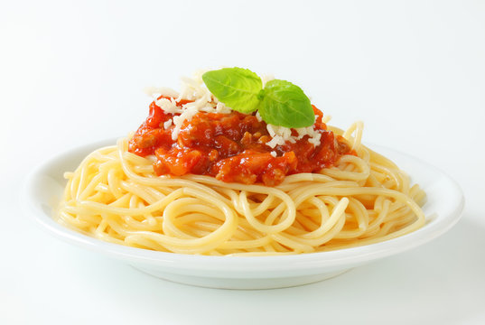

Saucy Spaghetti

Description
Dive into a plate of Saucy Spaghetti that promises a burst of flavor
in every bite. Our recipe features al dente spaghetti coated in a
savory, aromatic tomato sauce. Garnished with fresh herbs and grated
Parmesan, it's a pasta lover's dream come true.
Ingredients:
- Spaghetti pasta
- Ground beef or Italian sausage
- Crushed tomatoes
- Garlic and onions
- Italian herbs (e.g., basil, oregano)
Directions
- Cook spaghetti as directed; reserve a cup of pasta water.
- Brown meat in a pan; add garlic, onions, and herbs.
- Stir in crushed tomatoes and pasta water; simmer.
- Combine cooked pasta with the sauce.
- Garnish with fresh herbs and grated Parmesan.